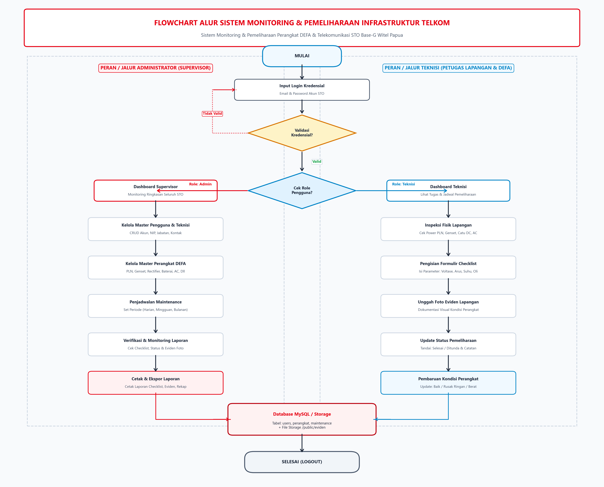
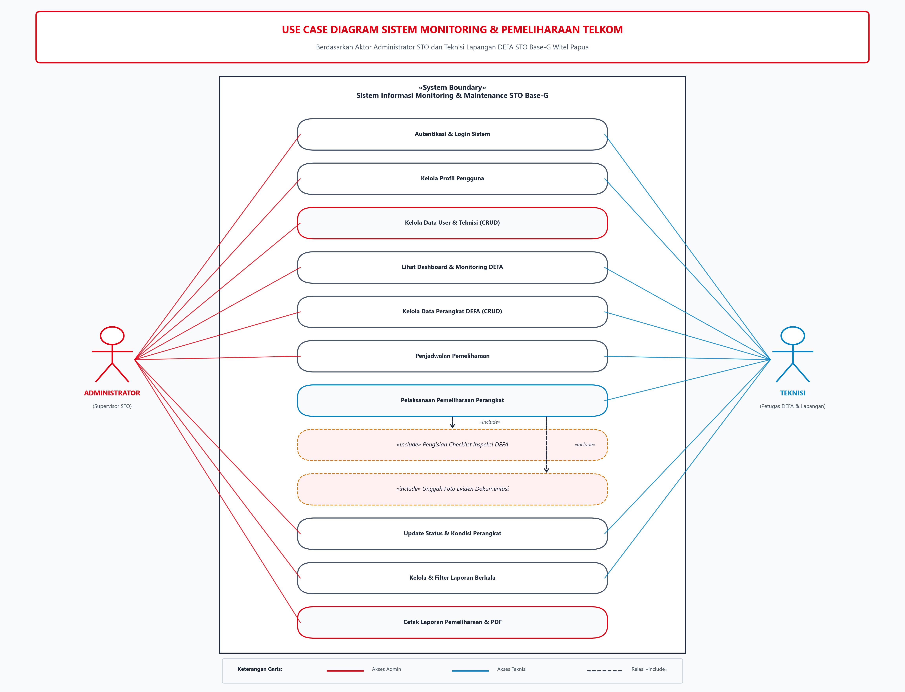
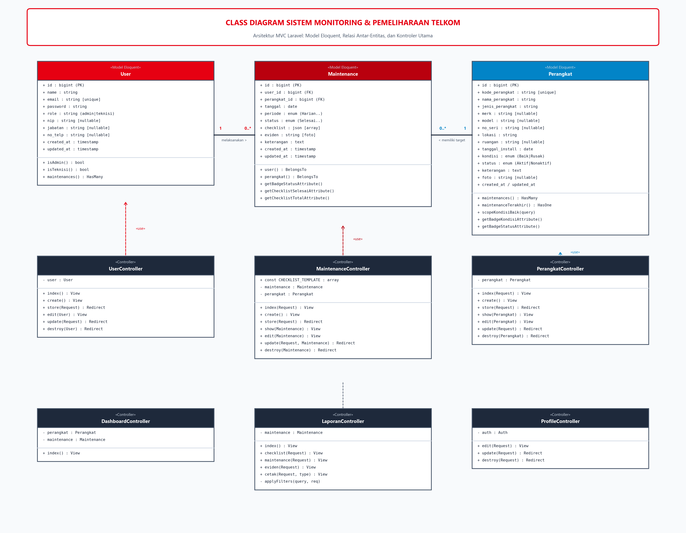
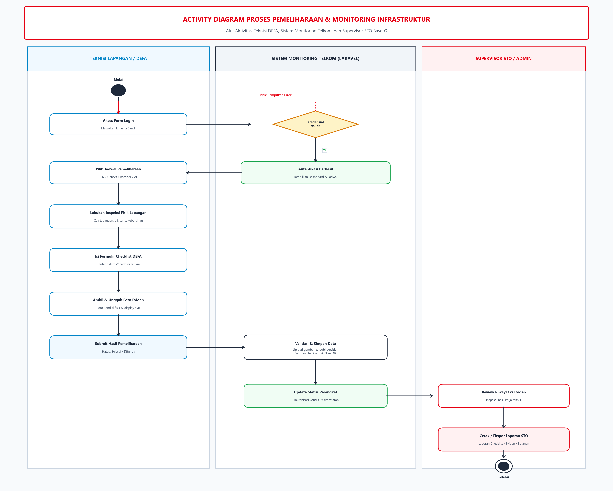
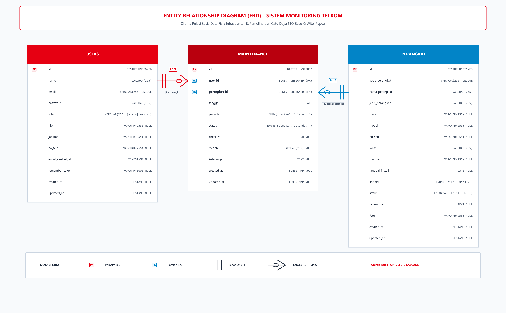

1. Alur Sistem (Flowchart) Operational Flow
Alur end-to-end dari autentikasi, manajemen perangkat, penjadwalan, inspeksi lapangan, hingga riwayat laporan.



2. Use Case Diagram Functional Roles
Pemetaan peran aktor (Admin Supervisor & Teknisi DEFA) terhadap seluruh fungsionalitas sistem.



3. Class Diagram Architecture & MVC
Struktur arsitektur model Eloquent Laravel, atribut, method relasi database, dan interaksi controller.



4. Activity Diagram Workflow Swimlane
Diagram aktivitas alur kerja pemeliharaan antara Admin, Sistem, dan Teknisi.



5. Entity Relationship Diagram (ERD) Database Schema
Skema basis data fisik MySQL dengan tipe data, primary key, foreign key, dan integritas relasional.


